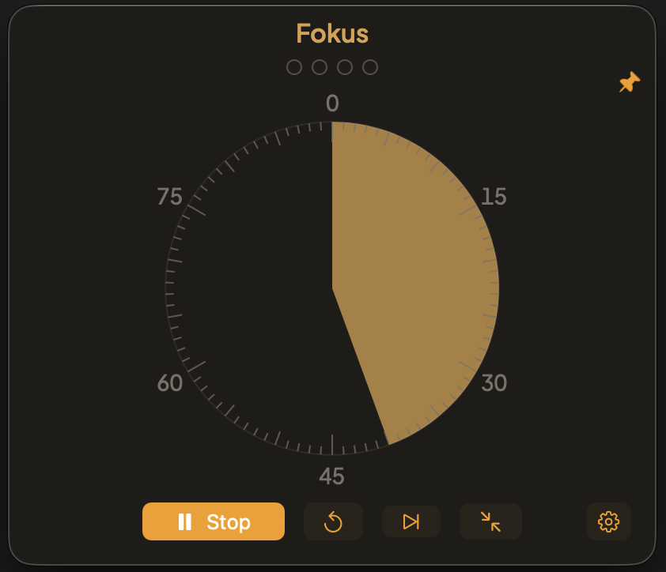

Ein Fokus-Timer, der sichtbar bleibt.
Der LifeStrings Timer arbeitet im Pomodoro-Rhythmus: Fokus, kurze Pause, lange Pause. Die verbleibende Zeit zeigt er wahlweise als Ziffern oder als ablaufende Scheibe. Ein Mini-Fenster schwebt über allen anderen Fenstern, damit die Zeit im Blick bleibt. Keine Konten, keine Cloud, keine Statistik – ein Timer, sonst nichts.

Version 2.0 · 0,6 MB · ab macOS 14 · kostenlos · von Apple notarisiert
Der LifeStrings Timer ist noch nicht bei Apple notarisiert. Beim ersten Start meldet sich macOS deshalb mit einem Warnhinweis. Welcher der beiden folgenden erscheint, hängt vom System ab.
Die App ist nicht beschädigt. Der Download hat sie mit einem Quarantäne-Merkmal versehen, das die Signatur ungültig macht. Der folgende Befehl im Terminal entfernt es:
xattr -cr "/Applications/LifeStrings Timer.app"Danach lässt sich die App normal öffnen.
Beides entfällt, sobald der Developer-Account eingerichtet ist – dann kommt eine notarisierte Fassung, die sich ohne Umweg öffnen lässt.